The goal of this script is to find a list of differentially expressed genes between tissues and between species.
# Load libraries
library("gplots")Warning: package 'gplots' was built under R version 3.2.4
Attaching package: 'gplots'The following object is masked from 'package:stats':
lowesslibrary("ggplot2")Warning: package 'ggplot2' was built under R version 3.2.5library("RColorBrewer")
library("scales")Warning: package 'scales' was built under R version 3.2.5library("edgeR")Warning: package 'edgeR' was built under R version 3.2.4Loading required package: limmaWarning: package 'limma' was built under R version 3.2.4library("R.utils")Warning: package 'R.utils' was built under R version 3.2.5Loading required package: R.ooWarning: package 'R.oo' was built under R version 3.2.5Loading required package: R.methodsS3Warning: package 'R.methodsS3' was built under R version 3.2.3R.methodsS3 v1.7.1 (2016-02-15) successfully loaded. See ?R.methodsS3 for help.R.oo v1.21.0 (2016-10-30) successfully loaded. See ?R.oo for help.
Attaching package: 'R.oo'The following objects are masked from 'package:methods':
getClasses, getMethodsThe following objects are masked from 'package:base':
attach, detach, gc, load, saveR.utils v2.5.0 (2016-11-07) successfully loaded. See ?R.utils for help.
Attaching package: 'R.utils'The following object is masked from 'package:utils':
timestampThe following objects are masked from 'package:base':
cat, commandArgs, getOption, inherits, isOpen, parse, warningslibrary("plyr")Warning: package 'plyr' was built under R version 3.2.5library("limma")
library("VennDiagram")Warning: package 'VennDiagram' was built under R version 3.2.5Loading required package: gridLoading required package: futile.loggerWarning: package 'futile.logger' was built under R version 3.2.5source("functions.R")
# Load colors
colors <- colorRampPalette(c(brewer.pal(9, "Blues")[1],brewer.pal(9, "Blues")[9]))(100)
pal <- c(brewer.pal(9, "Set1"), brewer.pal(8, "Set2"), brewer.pal(12, "Set3"))
# Retrieve RIN score for each sample
RNA_seq_info <- read.csv("../data/RNA_seq_info.csv")
RIN <- as.data.frame(RNA_seq_info[,22])
RIN <- RIN[-31,]
# Retrieve sample information
samples <- read.delim("../data/Sample_info_RNAseq_limma.txt")
samples <- samples[-31,] # We don't have a RIN score for human 4 liver
# Eliminate H1H
samples <- samples[-17,]
dim(samples)[1] 46 4# Make labels
labels <- paste(samples$Species, samples$Tissue, sep=" ")## Make the contrast matrix
species <- samples$Species
tissue <- samples$Tissue
# Rename columns of the contrast matrix
design <- model.matrix(~ species*tissue + RIN)
colnames(design)[1] <- "Intercept"
colnames(design) <- gsub("speciesHuman", "Human", colnames(design))
colnames(design) <- gsub("speciesRhesus", "Rhesus", colnames(design))
colnames(design) <- gsub("tissuekidney", "Kidney", colnames(design))
colnames(design) <- gsub("tissueliver", "Liver", colnames(design))
colnames(design) <- gsub("tissuelung", "Lung", colnames(design))
colnames(design) <- gsub(":", ".", colnames(design))# Load count data
counts_genes_in_cutoff_47 <- read.delim("../data/counts_12184.txt")
counts_genes_in_cutoff <- counts_genes_in_cutoff_47[,-30]
# TMM
dge_in_cutoff <- DGEList(counts=as.matrix(counts_genes_in_cutoff), genes=rownames(counts_genes_in_cutoff), group = as.character(t(labels)))
dge_in_cutoff <- calcNormFactors(dge_in_cutoff)
cpm_in_cutoff <- cpm(dge_in_cutoff, normalized.lib.sizes=TRUE, log=TRUE)
head(cpm_in_cutoff) C1H C1K C1Li C1Lu C2H C2K
ENSG00000000003 4.573568 6.488951 8.265202 5.486030 4.691103 6.081032
ENSG00000000419 5.846493 5.222441 5.941935 5.483014 5.685485 5.104872
ENSG00000000457 4.564597 5.219201 5.906964 4.977026 4.838499 5.293882
ENSG00000000460 1.511284 1.874333 2.084694 2.313438 1.665015 1.972697
ENSG00000000938 5.616253 3.824078 5.095620 7.555190 2.537590 4.182601
ENSG00000000971 6.881570 4.456291 11.372553 6.104651 6.140200 4.891851
C2Li C2Lu C3H C3K C3Li C3Lu
ENSG00000000003 8.033942 4.568963 4.919846 6.410781 7.788836 5.880453
ENSG00000000419 5.817914 5.204323 5.680448 5.183887 6.418152 5.601179
ENSG00000000457 6.549741 4.990390 4.623124 5.208716 6.502523 5.173456
ENSG00000000460 2.329355 2.027982 1.584905 1.466073 2.348643 2.129148
ENSG00000000938 5.392928 8.087913 4.969616 4.227966 5.208902 7.164815
ENSG00000000971 11.391562 6.250982 5.611289 4.945529 11.424637 5.995247
C4H C4K C4Li C4Lu H1K H1Li
ENSG00000000003 4.240221 6.508187 8.458198 5.434692 6.869131 6.580552
ENSG00000000419 5.789883 5.262406 5.886005 5.326251 5.592621 6.087467
ENSG00000000457 4.649760 5.027691 6.601969 5.268275 4.289473 4.958293
ENSG00000000460 1.461067 1.831232 2.211280 2.481119 2.771224 4.993804
ENSG00000000938 3.643416 3.625703 4.584843 7.722234 4.063809 4.484410
ENSG00000000971 6.849690 5.962307 11.335381 6.425887 6.590016 11.221112
H1Lu H2H H2K H2Li H2Lu H3H
ENSG00000000003 5.103472 3.685552 7.210038 6.643414 4.185570 3.54806908
ENSG00000000419 5.815324 5.610795 5.466147 5.842913 5.317919 5.75537924
ENSG00000000457 4.506583 3.411145 4.162933 4.455307 4.206318 4.44509881
ENSG00000000460 3.322483 1.896662 1.982948 2.662376 2.557536 -0.07138695
ENSG00000000938 7.882637 5.564510 3.744777 5.994769 6.973363 4.10130761
ENSG00000000971 7.565878 6.367758 4.740910 9.413943 7.315285 6.22954405
H3K H3Li H3Lu H4H H4K H4Lu
ENSG00000000003 7.096040 7.740415 5.294566 4.288642 6.376252 4.467923
ENSG00000000419 5.859410 6.221288 5.014314 6.248997 5.612557 5.354892
ENSG00000000457 4.727258 4.998187 4.003636 3.316831 4.091946 4.178113
ENSG00000000460 2.995062 3.242213 2.461715 1.634400 1.987589 2.608895
ENSG00000000938 2.647590 5.745535 6.917217 4.922960 3.825316 8.253473
ENSG00000000971 5.317724 10.350971 7.128721 6.931559 6.037082 8.281707
R1H R1K R1Li R1Lu R2H R2K
ENSG00000000003 4.360836 6.937403 8.3387961 5.920017 4.629816 7.138654
ENSG00000000419 5.468551 5.396303 5.8304125 4.891525 5.299986 5.048299
ENSG00000000457 4.289677 5.029321 5.1480101 4.841841 4.316130 5.159301
ENSG00000000460 1.288792 1.559698 -0.1691694 2.485003 1.420245 1.324437
ENSG00000000938 1.841655 2.568666 3.8086285 6.519794 2.331513 2.686205
ENSG00000000971 4.032377 6.580489 12.1367355 7.450446 5.576154 6.783171
R2Li R2Lu R3H R3K R3Li R3Lu
ENSG00000000003 8.644762 5.659132 4.473506 7.170518 8.206895 5.457959
ENSG00000000419 5.727589 4.885918 5.467427 5.371831 5.994773 4.960583
ENSG00000000457 5.515590 5.270085 4.245915 5.144261 5.364003 5.169900
ENSG00000000460 1.501379 2.399349 1.661056 1.878860 1.418164 2.581707
ENSG00000000938 3.676711 6.587845 2.875250 2.271666 3.640782 6.850353
ENSG00000000971 11.782724 7.236467 5.154956 6.058685 12.091712 7.262728
R4H R4K R4Li R4Lu
ENSG00000000003 4.896983 7.098877 7.709806 5.365706
ENSG00000000419 5.431843 5.220175 5.468637 5.046226
ENSG00000000457 4.514151 5.148735 5.322679 4.832820
ENSG00000000460 1.092607 1.513856 1.538624 2.852017
ENSG00000000938 2.479232 2.315024 4.513771 6.839315
ENSG00000000971 6.413351 6.473508 11.699950 7.302673hist(cpm_in_cutoff, xlab = "Log2(CPM)", main = "Log2(CPM) values for genes meeting the filtering criteria", breaks = 100 )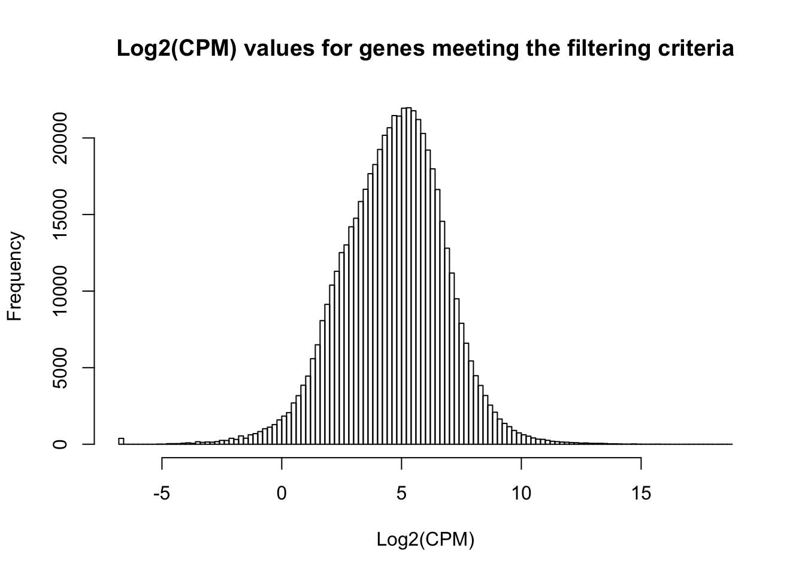
# Voom with individual as a random variable
cpm.voom.cyclic <- voom(dge_in_cutoff, design, normalize.method="cyclicloess", plot=T)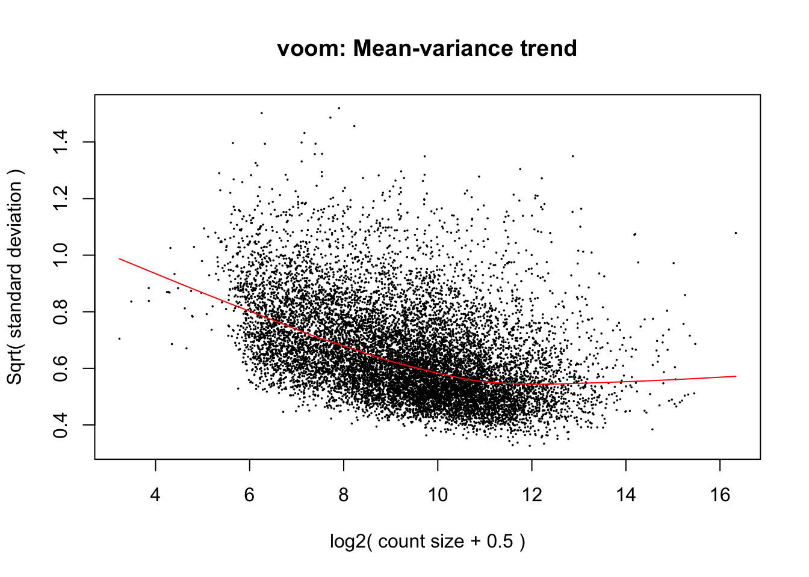
#corfit <- duplicateCorrelation(cpm.voom.cyclic, design, block=samples$Individual)
corfit.consensus <- 0.221922
# Final voom on filtered data
cpm.voom.cyclic <- voom(dge_in_cutoff, design, normalize.method="cyclicloess", plot=TRUE, block=samples$Individual, correlation=corfit.consensus)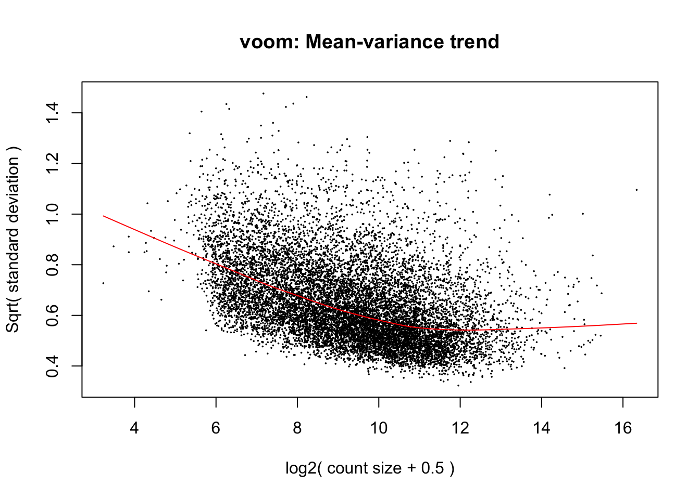
fit.cyclic.norm <- lmFit(cpm.voom.cyclic, design, plot = TRUE, block=samples$Individual, correlation=corfit$consensus)
fit.cyclic.norm <- eBayes(fit.cyclic.norm)
# MA Plots
## If 'MA' is an 'MArrayLM' object, then the plot is a fitted model MA-plot in which the estimated coefficient is on the y-axis and the average A-value is on the x-axis.
limma::plotMA(fit.cyclic.norm, array=1, xlab="average coefficient", ylab="estimated coefficient")Warning in plot.window(...): "array" is not a graphical parameterWarning in plot.xy(xy, type, ...): "array" is not a graphical parameterWarning in axis(side = side, at = at, labels = labels, ...): "array" is not
a graphical parameter
Warning in axis(side = side, at = at, labels = labels, ...): "array" is not
a graphical parameterWarning in box(...): "array" is not a graphical parameterWarning in title(...): "array" is not a graphical parameter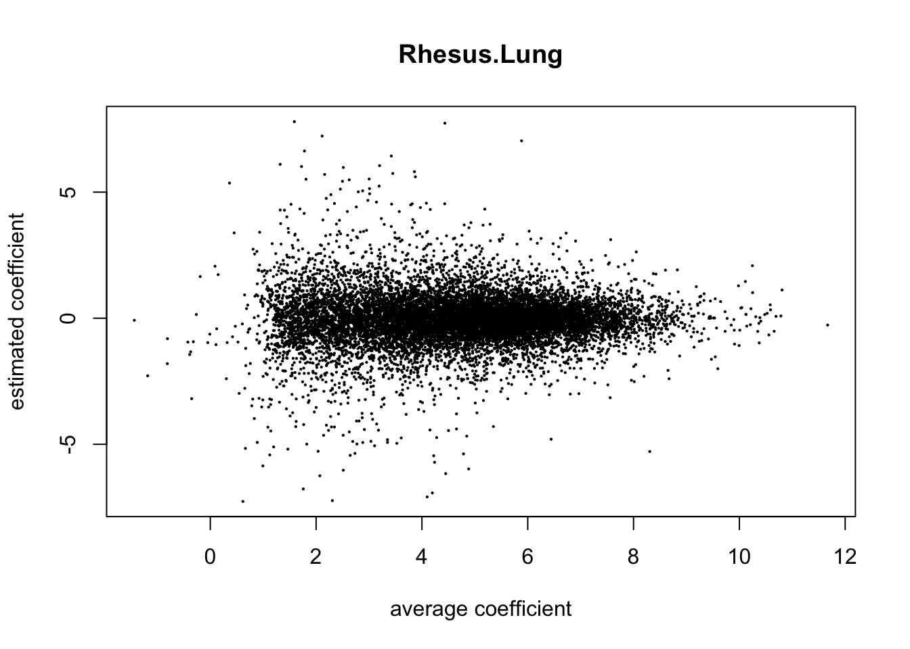
## - Potential caveat: variances could be different between human, chimp and rhesus (see Gordon Smyth email, 7 June 2013).
## We look at the standard error for each condition
hist(fit.cyclic.norm$stdev.unscaled * fit.cyclic.norm$sigma, breaks=100)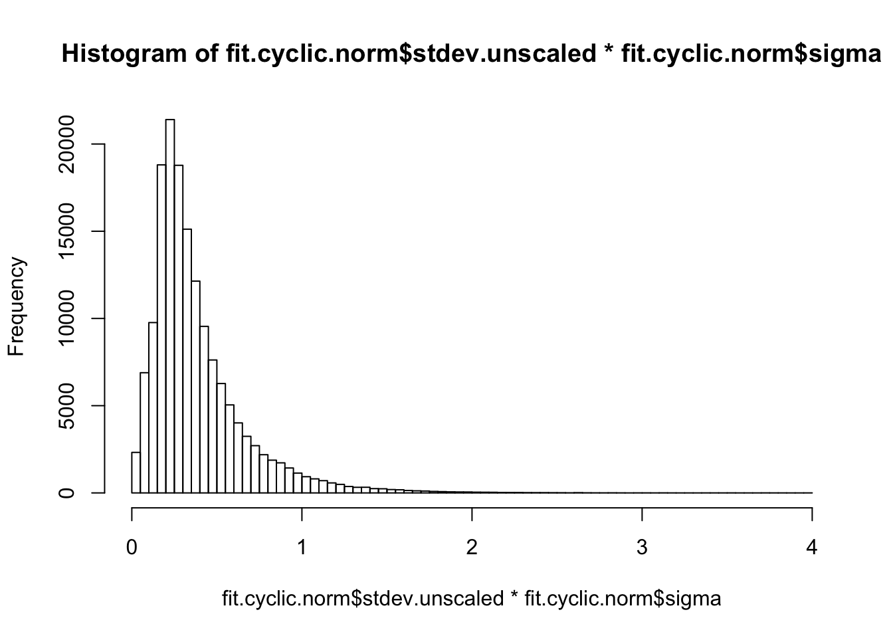
hist(log2(fit.cyclic.norm$stdev.unscaled * fit.cyclic.norm$sigma), breaks=100)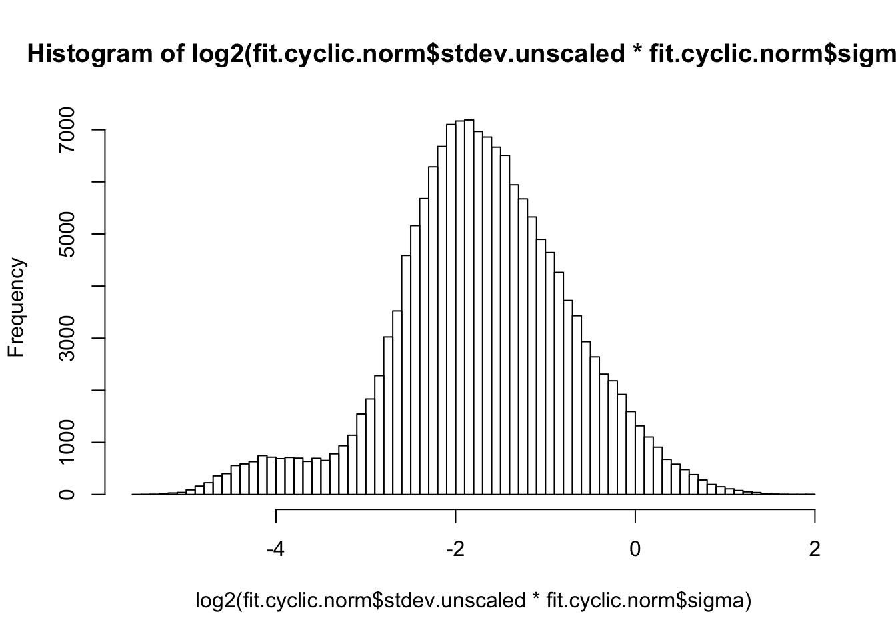
boxplot(log2(fit.cyclic.norm$stdev.unscaled * fit.cyclic.norm$sigma))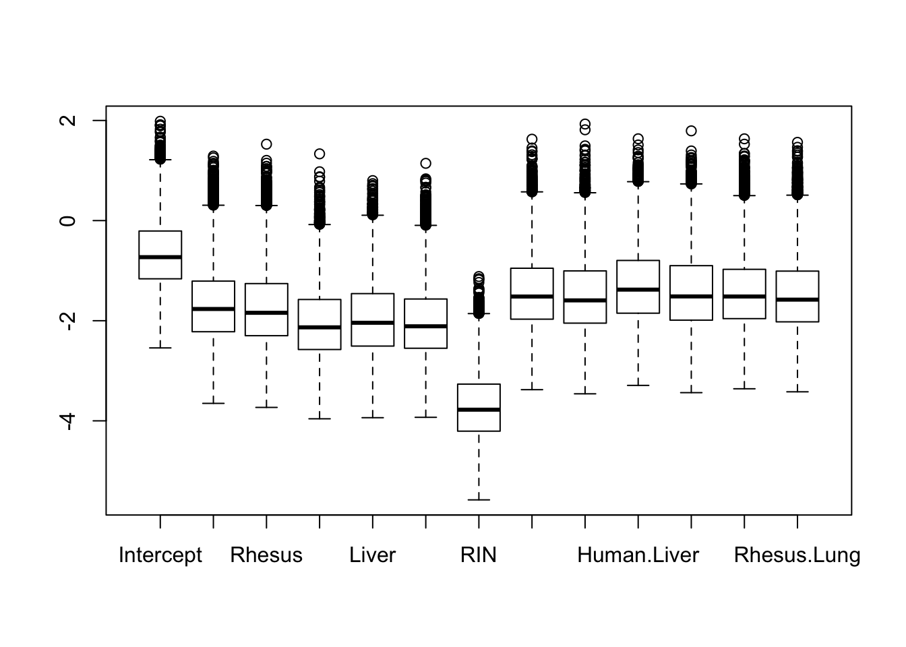
## This seems to be pretty comparable between conditions. The human heart is higher, probably because of H1H missing and H3H with a bit strange behavior
stderror <- log2(fit.cyclic.norm$stdev.unscaled * fit.cyclic.norm$sigma)
boxplot(list(stderror[,1:4], stderror[,5:8], stderror[,9:12]))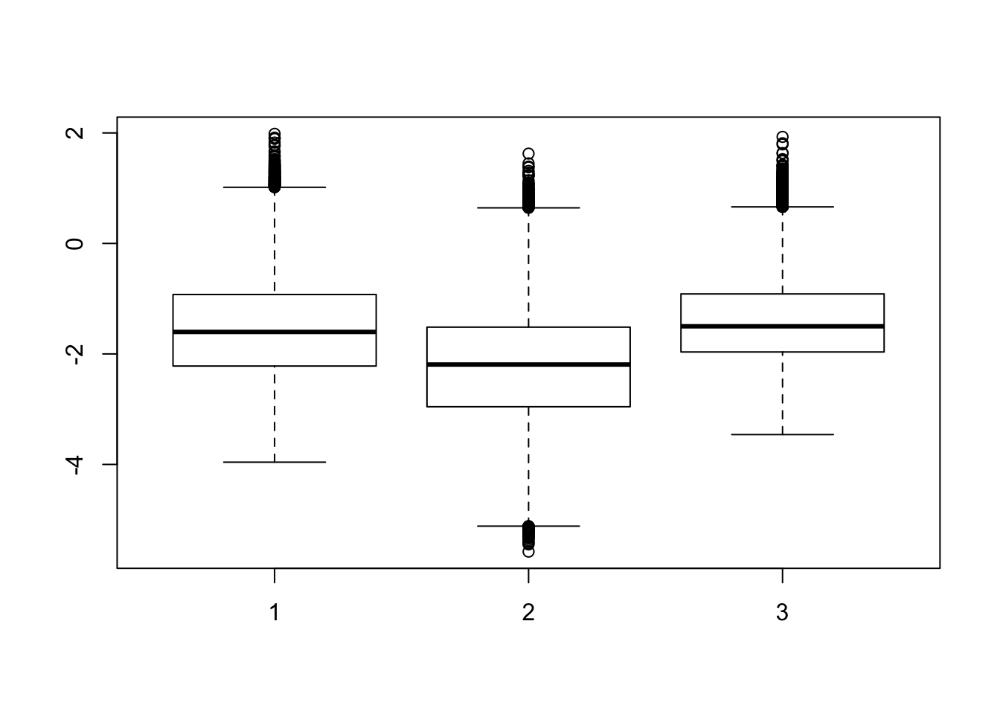
## A bit higher for human, and a bit lower for rhesus
boxplot(list(stderror[,2:4], stderror[,6:8], stderror[,8:12])) ## excluding heart samples 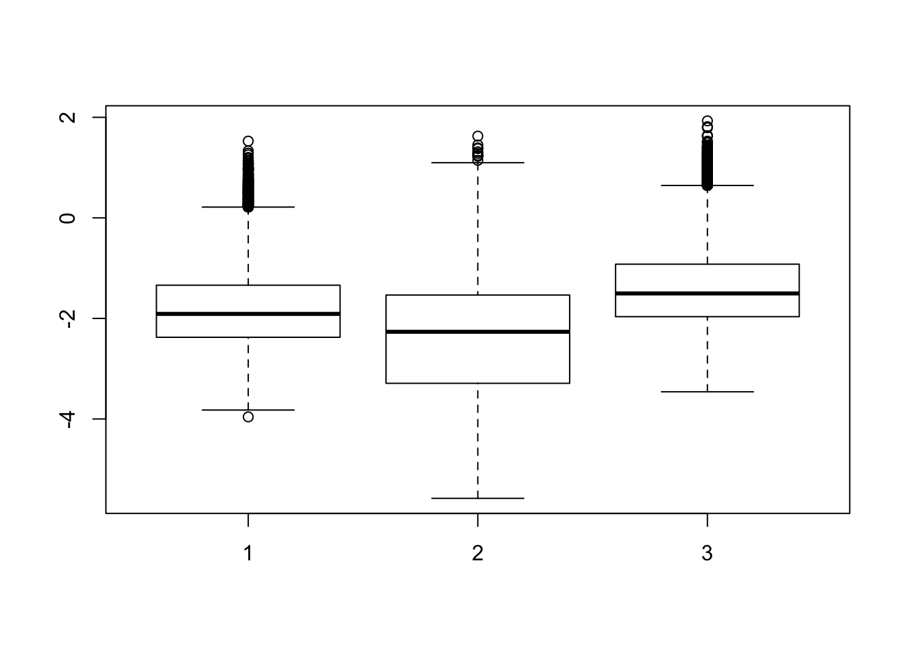
# In the contrast matrix, we have many comparisons for species and tissues individually
# Note: baseline is chimp heart
cm1 <- makeContrasts(HvC_Liver = Human + Liver + Human.Liver - Liver,
HvC_Lung = Human + Lung + Human.Lung - Lung,
HvC_Heart = Human,
HvC_Kidney = Human + Kidney + Human.Kidney - Kidney,
HvR_Liver = Human + Liver + Human.Liver - (Rhesus + Liver + Rhesus.Liver),
HvR_Lung = Human + Lung + Human.Lung - (Rhesus + Lung + Rhesus.Lung),
HvR_Heart = Human - Rhesus,
HvR_Kidney = Human + Kidney + Human.Kidney - (Rhesus + Kidney + Rhesus.Kidney),
CvR_Liver = Liver - (Rhesus + Liver + Rhesus.Liver),
CvR_Lung = Lung - (Rhesus + Lung + Rhesus.Lung),
CvR_Heart = Rhesus,
CvR_Kidney = Kidney - (Rhesus + Kidney + Rhesus.Kidney),
H_HeartvLi = Human - (Human + Liver + Human.Liver),
H_HeartvLu = Human - (Human + Lung + Human.Lung),
H_HeartvK = Human - (Human + Kidney + Human.Kidney),
H_LivLu = (Human + Liver + Human.Liver) - (Human + Lung + Human.Lung),
H_LivK = (Human + Liver + Human.Liver) - (Human + Kidney + Human.Kidney),
H_LuvK = (Human + Lung + Human.Lung) - (Human + Kidney + Human.Kidney),
C_HeartvLi = Liver,
C_HeartvLu = Lung,
C_HeartvK = Kidney,
C_LivLu = Liver - Lung,
C_LivK = Liver - Kidney,
C_LuvK = Lung - Kidney,
R_HeartvLi = Rhesus - (Rhesus + Liver + Rhesus.Liver),
R_HeartvLu = Rhesus - (Rhesus + Lung + Rhesus.Lung),
R_HeartvK = Rhesus - (Rhesus + Kidney + Rhesus.Kidney),
R_LivLu = (Rhesus + Liver + Rhesus.Liver) - (Rhesus + Lung + Rhesus.Lung),
R_LivK = (Rhesus + Liver + Rhesus.Liver) - (Rhesus + Kidney + Rhesus.Kidney),
R_LuvK = (Rhesus + Lung + Rhesus.Lung) - (Rhesus + Kidney + Rhesus.Kidney),
Sig_HLi = Human.Liver,
Sig_HLu = Human.Lung,
Sig_HK = Human.Kidney,
Sig_RLi = Rhesus.Liver,
Sig_RLu = Rhesus.Lung,
Sig_RK = Rhesus.Kidney,
levels = design)
# Implement contrasts
contrasts_each_species <- contrasts.fit(fit.cyclic.norm, cm1)
fit1 <- eBayes(contrasts_each_species)
top3 <- list(HvC_Liver =topTable(fit1, coef=1, adjust="BH", number=Inf, sort.by="none"),
HvC_Lung =topTable(fit1, coef=2, adjust="BH", number=Inf, sort.by="none"),
HvC_Heart =topTable(fit1, coef=3, adjust="BH", number=Inf, sort.by="none"),
HvC_Kidney =topTable(fit1, coef=4, adjust="BH", number=Inf, sort.by="none"),
HvR_Liver =topTable(fit1, coef=5, adjust="BH", number=Inf, sort.by="none"),
HvR_Lung =topTable(fit1, coef=6, adjust="BH", number=Inf, sort.by="none"),
HvR_Heart =topTable(fit1, coef=7, adjust="BH", number=Inf, sort.by="none"),
HvR_Kidney =topTable(fit1, coef=8, adjust="BH", number=Inf, sort.by="none"),
CvR_Liver =topTable(fit1, coef=9, adjust="BH", number=Inf, sort.by="none"),
CvR_Lung =topTable(fit1, coef=10, adjust="BH", number=Inf, sort.by="none"),
CvR_Heart =topTable(fit1, coef=11, adjust="BH", number=Inf, sort.by="none"),
CvR_Kidney =topTable(fit1, coef=12, adjust="BH", number=Inf, sort.by="none"),
H_HeartvLi =topTable(fit1, coef=13, adjust="BH", number=Inf, sort.by="none"),
H_HeartvLu =topTable(fit1, coef=14, adjust="BH", number=Inf, sort.by="none"),
H_HeartvK =topTable(fit1, coef=15, adjust="BH", number=Inf, sort.by="none"),
H_LivLu =topTable(fit1, coef=16, adjust="BH", number=Inf, sort.by="none"),
H_LivK =topTable(fit1, coef=17, adjust="BH", number=Inf, sort.by="none"),
H_LuvK =topTable(fit1, coef=18, adjust="BH", number=Inf, sort.by="none"),
C_HeartvLi =topTable(fit1, coef=19, adjust="BH", number=Inf, sort.by="none"),
C_HeartvLu =topTable(fit1, coef=20, adjust="BH", number=Inf, sort.by="none"),
C_HeartvK =topTable(fit1, coef=21, adjust="BH", number=Inf, sort.by="none"),
C_LivLu =topTable(fit1, coef=22, adjust="BH", number=Inf, sort.by="none"),
C_LivK =topTable(fit1, coef=23, adjust="BH", number=Inf, sort.by="none"),
C_LuvK =topTable(fit1, coef=24, adjust="BH", number=Inf, sort.by="none"),
R_HeartvLi =topTable(fit1, coef=25, adjust="BH", number=Inf, sort.by="none"),
R_HeartvLu =topTable(fit1, coef=26, adjust="BH", number=Inf, sort.by="none"),
R_HeartvK =topTable(fit1, coef=27, adjust="BH", number=Inf, sort.by="none"),
R_LivLu =topTable(fit1, coef=28, adjust="BH", number=Inf, sort.by="none"),
R_LivK =topTable(fit1, coef=29, adjust="BH", number=Inf, sort.by="none"),
R_LuvK =topTable(fit1, coef=30, adjust="BH", number=Inf, sort.by="none"),
Sig_HLi =topTable(fit1, coef=31, adjust="BH", number=Inf, sort.by="none"),
Sig_HLu =topTable(fit1, coef=32, adjust="BH", number=Inf, sort.by="none"),
Sig_HK =topTable(fit1, coef=33, adjust="BH", number=Inf, sort.by="none"),
Sig_RLi =topTable(fit1, coef=34, adjust="BH", number=Inf, sort.by="none"),
Sig_RLu =topTable(fit1, coef=35, adjust="BH", number=Inf, sort.by="none"),
Sig_RK =topTable(fit1, coef=36, adjust="BH", number=Inf, sort.by="none") )
# Set FDR level at 1%
FDR_level <- 0.01
## DE between HvC
mylist <- list()
mylist[["Liver"]] <- row.names(top3[[names(top3)[1]]])[top3[[names(top3)[1]]]$adj.P.Val < FDR_level]
mylist[["Lung"]] <- row.names(top3[[names(top3)[2]]])[top3[[names(top3)[2]]]$adj.P.Val < FDR_level]
mylist[["Heart"]] <- row.names(top3[[names(top3)[3]]])[top3[[names(top3)[3]]]$adj.P.Val < FDR_level]
mylist[["Kidney"]] <- row.names(top3[[names(top3)[4]]])[top3[[names(top3)[4]]]$adj.P.Val < FDR_level]
# Make
dev.off()null device
1 Four_comp <- venn.diagram(mylist, filename= NULL, main="DE genes between Humans and Chimps (FDR 1%)", cex=1.5 , fill = pal[1:4], lty=1, height=2000, width=3000)
grid.draw(Four_comp)
## DE between HvR
mylist <- list()
mylist[["Liver"]] <- row.names(top3[[names(top3)[5]]])[top3[[names(top3)[5]]]$adj.P.Val < FDR_level]
mylist[["Lung"]] <- row.names(top3[[names(top3)[6]]])[top3[[names(top3)[6]]]$adj.P.Val < FDR_level]
mylist[["Heart"]] <- row.names(top3[[names(top3)[7]]])[top3[[names(top3)[7]]]$adj.P.Val < FDR_level]
mylist[["Kidney"]] <- row.names(top3[[names(top3)[8]]])[top3[[names(top3)[8]]]$adj.P.Val < FDR_level]
# Make
dev.off()null device
1 Four_comp <- venn.diagram(mylist, filename= NULL, main="DE genes between Humans and Rhesus (FDR 1%)", cex=1.5 , fill = pal[1:4], lty=1, height=2000, width=3000)
grid.draw(Four_comp)
## DE between CvR
mylist <- list()
mylist[["Liver"]] <- row.names(top3[[names(top3)[9]]])[top3[[names(top3)[9]]]$adj.P.Val < FDR_level]
mylist[["Lung"]] <- row.names(top3[[names(top3)[10]]])[top3[[names(top3)[10]]]$adj.P.Val < FDR_level]
mylist[["Heart"]] <- row.names(top3[[names(top3)[11]]])[top3[[names(top3)[11]]]$adj.P.Val < FDR_level]
mylist[["Kidney"]] <- row.names(top3[[names(top3)[12]]])[top3[[names(top3)[12]]]$adj.P.Val < FDR_level]
# Make
dev.off()null device
1 Four_comp <- venn.diagram(mylist, filename= NULL, main="DE genes between Chimps and Rhesus (FDR 1%)", cex=1.5 , fill = pal[1:4], lty=1, height=2000, width=3000)
grid.draw(Four_comp)
## DE between Heart and Liver
mylist <- list()
mylist[["Human"]] <- row.names(top3[[names(top3)[13]]])[top3[[names(top3)[13]]]$adj.P.Val < FDR_level]
mylist[["Chimp"]] <- row.names(top3[[names(top3)[19]]])[top3[[names(top3)[19]]]$adj.P.Val < FDR_level]
mylist[["Rhesus"]] <- row.names(top3[[names(top3)[25]]])[top3[[names(top3)[25]]]$adj.P.Val < FDR_level]
# Make
dev.off()null device
1 Four_comp <- venn.diagram(mylist, filename= NULL, main="DE genes between Heart and Liver (FDR 1%)", cex=1.5 , fill = pal[1:3], lty=1, height=2000, width=3000)
grid.draw(Four_comp)
## DE between Heart and Lung
mylist <- list()
mylist[["Human"]] <- row.names(top3[[names(top3)[14]]])[top3[[names(top3)[14]]]$adj.P.Val < FDR_level]
mylist[["Chimp"]] <- row.names(top3[[names(top3)[20]]])[top3[[names(top3)[20]]]$adj.P.Val < FDR_level]
mylist[["Rhesus"]] <- row.names(top3[[names(top3)[26]]])[top3[[names(top3)[26]]]$adj.P.Val < FDR_level]
# Make
dev.off()null device
1 Four_comp <- venn.diagram(mylist, filename= NULL, main="DE genes between Heart and Lung (FDR 1%)", cex=1.5 , fill = pal[1:3], lty=1, height=2000, width=3000)
grid.draw(Four_comp)
## DE between Heart and Kidney
mylist <- list()
mylist[["Human"]] <- row.names(top3[[names(top3)[15]]])[top3[[names(top3)[15]]]$adj.P.Val < FDR_level]
mylist[["Chimp"]] <- row.names(top3[[names(top3)[21]]])[top3[[names(top3)[21]]]$adj.P.Val < FDR_level]
mylist[["Rhesus"]] <- row.names(top3[[names(top3)[27]]])[top3[[names(top3)[27]]]$adj.P.Val < FDR_level]
# Make
dev.off()null device
1 Four_comp <- venn.diagram(mylist, filename= NULL, main="DE genes between Heart and Kidney (FDR 1%)", cex=1.5 , fill = pal[1:3], lty=1, height=2000, width=3000)
grid.draw(Four_comp)
## DE between Liver and Lung
mylist <- list()
mylist[["Human"]] <- row.names(top3[[names(top3)[16]]])[top3[[names(top3)[16]]]$adj.P.Val < FDR_level]
mylist[["Chimp"]] <- row.names(top3[[names(top3)[22]]])[top3[[names(top3)[22]]]$adj.P.Val < FDR_level]
mylist[["Rhesus"]] <- row.names(top3[[names(top3)[28]]])[top3[[names(top3)[28]]]$adj.P.Val < FDR_level]
# Make
dev.off()null device
1 Four_comp <- venn.diagram(mylist, filename= NULL, main="DE genes between Liver and Lung (FDR 1%)", cex=1.5 , fill = pal[1:3], lty=1, height=2000, width=3000)
grid.draw(Four_comp)
## DE between Liver and Kidney
mylist <- list()
mylist[["Human"]] <- row.names(top3[[names(top3)[17]]])[top3[[names(top3)[17]]]$adj.P.Val < FDR_level]
mylist[["Chimp"]] <- row.names(top3[[names(top3)[23]]])[top3[[names(top3)[23]]]$adj.P.Val < FDR_level]
mylist[["Rhesus"]] <- row.names(top3[[names(top3)[29]]])[top3[[names(top3)[29]]]$adj.P.Val < FDR_level]
# Make
dev.off()null device
1 Four_comp <- venn.diagram(mylist, filename= NULL, main="DE genes between Liver and Kidney (FDR 1%)", cex=1.5 , fill = pal[1:3], lty=1, height=2000, width=3000)
grid.draw(Four_comp)
## DE between Lung and Kidney
mylist <- list()
mylist[["Human"]] <- row.names(top3[[names(top3)[18]]])[top3[[names(top3)[18]]]$adj.P.Val < FDR_level]
mylist[["Chimp"]] <- row.names(top3[[names(top3)[24]]])[top3[[names(top3)[24]]]$adj.P.Val < FDR_level]
mylist[["Rhesus"]] <- row.names(top3[[names(top3)[30]]])[top3[[names(top3)[30]]]$adj.P.Val < FDR_level]
# Make
dev.off()null device
1 Four_comp <- venn.diagram(mylist, filename= NULL, main="DE genes between Lung and Kidney (FDR 1%)", cex=1.5 , fill = pal[1:3], lty=1, height=2000, width=3000)
grid.draw(Four_comp)# Set FDR level at 1%
FDR_level <- 0.01
### Heart specific (DE in Heart v. Liver, Heart v. Lung, Heart v. Kidney but not Liver versus Lung, Liver versus Kidney, Lung v. Kidney)
mylist <- list()
mylist[["Human"]] <- intersect(intersect(intersect(intersect(intersect(row.names(top3[[names(top3)[13]]])[top3[[names(top3)[13]]]$adj.P.Val < FDR_level], row.names(top3[[names(top3)[14]]])[top3[[names(top3)[14]]]$adj.P.Val < FDR_level]), row.names(top3[[names(top3)[15]]])[top3[[names(top3)[15]]]$adj.P.Val < FDR_level]), row.names(top3[[names(top3)[16]]])[top3[[names(top3)[16]]]$adj.P.Val > FDR_level]), row.names(top3[[names(top3)[17]]])[top3[[names(top3)[17]]]$adj.P.Val > FDR_level]), row.names(top3[[names(top3)[18]]])[top3[[names(top3)[18]]]$adj.P.Val > FDR_level])
mylist[["Chimp"]] <- intersect(intersect(intersect(intersect(intersect(row.names(top3[[names(top3)[19]]])[top3[[names(top3)[19]]]$adj.P.Val < FDR_level], row.names(top3[[names(top3)[20]]])[top3[[names(top3)[20]]]$adj.P.Val < FDR_level]), row.names(top3[[names(top3)[21]]])[top3[[names(top3)[21]]]$adj.P.Val < FDR_level]), row.names(top3[[names(top3)[22]]])[top3[[names(top3)[22]]]$adj.P.Val > FDR_level]), row.names(top3[[names(top3)[23]]])[top3[[names(top3)[23]]]$adj.P.Val > FDR_level]), row.names(top3[[names(top3)[24]]])[top3[[names(top3)[24]]]$adj.P.Val > FDR_level])
mylist[["Rhesus"]] <- intersect(intersect(intersect(intersect(intersect(row.names(top3[[names(top3)[25]]])[top3[[names(top3)[25]]]$adj.P.Val < FDR_level], row.names(top3[[names(top3)[26]]])[top3[[names(top3)[26]]]$adj.P.Val < FDR_level]), row.names(top3[[names(top3)[27]]])[top3[[names(top3)[27]]]$adj.P.Val < FDR_level]), row.names(top3[[names(top3)[28]]])[top3[[names(top3)[28]]]$adj.P.Val > FDR_level]), row.names(top3[[names(top3)[29]]])[top3[[names(top3)[29]]]$adj.P.Val > FDR_level]), row.names(top3[[names(top3)[30]]])[top3[[names(top3)[30]]]$adj.P.Val > FDR_level])
# Make
dev.off()null device
1 Four_comp <- venn.diagram(mylist, filename= NULL, main="Heart specific DE genes (FDR 1%)", cex=1.5 , fill = pal[1:3], lty=1, height=2000, width=3000)
grid.draw(Four_comp)
# Set FDR level at 1%
FDR_level <- 0.01
### Liver specific
mylist <- list()
mylist[["Human"]] <- intersect(intersect(intersect(intersect(intersect(row.names(top3[[names(top3)[13]]])[top3[[names(top3)[13]]]$adj.P.Val < FDR_level], row.names(top3[[names(top3)[16]]])[top3[[names(top3)[16]]]$adj.P.Val < FDR_level]), row.names(top3[[names(top3)[17]]])[top3[[names(top3)[17]]]$adj.P.Val < FDR_level]), row.names(top3[[names(top3)[14]]])[top3[[names(top3)[14]]]$adj.P.Val > FDR_level]), row.names(top3[[names(top3)[15]]])[top3[[names(top3)[15]]]$adj.P.Val > FDR_level]), row.names(top3[[names(top3)[18]]])[top3[[names(top3)[18]]]$adj.P.Val > FDR_level])
mylist[["Chimp"]] <- intersect(intersect(intersect(intersect(intersect(row.names(top3[[names(top3)[19]]])[top3[[names(top3)[19]]]$adj.P.Val < FDR_level], row.names(top3[[names(top3)[22]]])[top3[[names(top3)[22]]]$adj.P.Val < FDR_level]), row.names(top3[[names(top3)[23]]])[top3[[names(top3)[23]]]$adj.P.Val < FDR_level]), row.names(top3[[names(top3)[20]]])[top3[[names(top3)[20]]]$adj.P.Val > FDR_level]), row.names(top3[[names(top3)[21]]])[top3[[names(top3)[21]]]$adj.P.Val > FDR_level]), row.names(top3[[names(top3)[24]]])[top3[[names(top3)[24]]]$adj.P.Val > FDR_level])
mylist[["Rhesus"]] <- intersect(intersect(intersect(intersect(intersect(row.names(top3[[names(top3)[25]]])[top3[[names(top3)[25]]]$adj.P.Val < FDR_level], row.names(top3[[names(top3)[28]]])[top3[[names(top3)[28]]]$adj.P.Val < FDR_level]), row.names(top3[[names(top3)[29]]])[top3[[names(top3)[29]]]$adj.P.Val < FDR_level]), row.names(top3[[names(top3)[26]]])[top3[[names(top3)[26]]]$adj.P.Val > FDR_level]), row.names(top3[[names(top3)[27]]])[top3[[names(top3)[27]]]$adj.P.Val > FDR_level]), row.names(top3[[names(top3)[30]]])[top3[[names(top3)[30]]]$adj.P.Val > FDR_level])
# Make
dev.off()null device
1 Four_comp <- venn.diagram(mylist, filename= NULL, main="Liver specific DE genes (FDR 1%)", cex=1.5 , fill = pal[1:3], lty=1, height=2000, width=3000)
grid.draw(Four_comp)
### Kidney specific
mylist <- list()
mylist[["Human"]] <- intersect(intersect(intersect(intersect(intersect(row.names(top3[[names(top3)[15]]])[top3[[names(top3)[15]]]$adj.P.Val < FDR_level], row.names(top3[[names(top3)[17]]])[top3[[names(top3)[17]]]$adj.P.Val < FDR_level]), row.names(top3[[names(top3)[18]]])[top3[[names(top3)[18]]]$adj.P.Val < FDR_level]), row.names(top3[[names(top3)[13]]])[top3[[names(top3)[13]]]$adj.P.Val > FDR_level]), row.names(top3[[names(top3)[14]]])[top3[[names(top3)[14]]]$adj.P.Val > FDR_level]), row.names(top3[[names(top3)[16]]])[top3[[names(top3)[16]]]$adj.P.Val > FDR_level])
mylist[["Chimp"]] <- intersect(intersect(intersect(intersect(intersect(row.names(top3[[names(top3)[21]]])[top3[[names(top3)[21]]]$adj.P.Val < FDR_level], row.names(top3[[names(top3)[23]]])[top3[[names(top3)[23]]]$adj.P.Val < FDR_level]), row.names(top3[[names(top3)[24]]])[top3[[names(top3)[24]]]$adj.P.Val < FDR_level]), row.names(top3[[names(top3)[19]]])[top3[[names(top3)[19]]]$adj.P.Val > FDR_level]), row.names(top3[[names(top3)[20]]])[top3[[names(top3)[20]]]$adj.P.Val > FDR_level]), row.names(top3[[names(top3)[22]]])[top3[[names(top3)[22]]]$adj.P.Val > FDR_level])
mylist[["Rhesus"]] <- intersect(intersect(intersect(intersect(intersect(row.names(top3[[names(top3)[27]]])[top3[[names(top3)[27]]]$adj.P.Val < FDR_level], row.names(top3[[names(top3)[29]]])[top3[[names(top3)[29]]]$adj.P.Val < FDR_level]), row.names(top3[[names(top3)[30]]])[top3[[names(top3)[30]]]$adj.P.Val < FDR_level]), row.names(top3[[names(top3)[25]]])[top3[[names(top3)[25]]]$adj.P.Val > FDR_level]), row.names(top3[[names(top3)[26]]])[top3[[names(top3)[26]]]$adj.P.Val > FDR_level]), row.names(top3[[names(top3)[28]]])[top3[[names(top3)[28]]]$adj.P.Val > FDR_level])
# Make
dev.off()null device
1 Four_comp <- venn.diagram(mylist, filename= NULL, main="Kidney specific DE genes (FDR 1%)", cex=1.5 , fill = pal[1:3], lty=1, height=2000, width=3000)
grid.draw(Four_comp)
### Lung specific
mylist <- list()
mylist[["Human"]] <- intersect(intersect(intersect(intersect(intersect(row.names(top3[[names(top3)[14]]])[top3[[names(top3)[14]]]$adj.P.Val < FDR_level], row.names(top3[[names(top3)[16]]])[top3[[names(top3)[16]]]$adj.P.Val < FDR_level]), row.names(top3[[names(top3)[18]]])[top3[[names(top3)[18]]]$adj.P.Val < FDR_level]), row.names(top3[[names(top3)[13]]])[top3[[names(top3)[13]]]$adj.P.Val > FDR_level]), row.names(top3[[names(top3)[15]]])[top3[[names(top3)[15]]]$adj.P.Val > FDR_level]), row.names(top3[[names(top3)[17]]])[top3[[names(top3)[17]]]$adj.P.Val > FDR_level])
mylist[["Chimp"]] <- intersect(intersect(intersect(intersect(intersect(row.names(top3[[names(top3)[20]]])[top3[[names(top3)[20]]]$adj.P.Val < FDR_level], row.names(top3[[names(top3)[22]]])[top3[[names(top3)[22]]]$adj.P.Val < FDR_level]), row.names(top3[[names(top3)[24]]])[top3[[names(top3)[24]]]$adj.P.Val < FDR_level]), row.names(top3[[names(top3)[19]]])[top3[[names(top3)[19]]]$adj.P.Val > FDR_level]), row.names(top3[[names(top3)[21]]])[top3[[names(top3)[21]]]$adj.P.Val > FDR_level]), row.names(top3[[names(top3)[23]]])[top3[[names(top3)[23]]]$adj.P.Val > FDR_level])
mylist[["Rhesus"]] <- intersect(intersect(intersect(intersect(intersect(row.names(top3[[names(top3)[26]]])[top3[[names(top3)[26]]]$adj.P.Val < FDR_level], row.names(top3[[names(top3)[28]]])[top3[[names(top3)[28]]]$adj.P.Val < FDR_level]), row.names(top3[[names(top3)[30]]])[top3[[names(top3)[30]]]$adj.P.Val < FDR_level]), row.names(top3[[names(top3)[25]]])[top3[[names(top3)[25]]]$adj.P.Val > FDR_level]), row.names(top3[[names(top3)[27]]])[top3[[names(top3)[27]]]$adj.P.Val > FDR_level]), row.names(top3[[names(top3)[29]]])[top3[[names(top3)[29]]]$adj.P.Val > FDR_level])
# Make
dev.off()null device
1 Four_comp <- venn.diagram(mylist, filename= NULL, main="Lung specific DE genes (FDR 1%)", cex=1.5 , fill = pal[1:3], lty=1, height=2000, width=3000)
grid.draw(Four_comp)# Set FDR level at 1%
FDR_level <- 0.01
### Heart specific with interactions
mylist <- list()
# Heart specific with human-by-heart interaction
mylist[["Human"]] <- intersect(intersect(intersect(intersect(intersect(intersect(intersect(intersect(row.names(top3[[names(top3)[13]]])[top3[[names(top3)[13]]]$adj.P.Val < FDR_level], row.names(top3[[names(top3)[14]]])[top3[[names(top3)[14]]]$adj.P.Val < FDR_level]), row.names(top3[[names(top3)[15]]])[top3[[names(top3)[15]]]$adj.P.Val < FDR_level]), row.names(top3[[names(top3)[16]]])[top3[[names(top3)[16]]]$adj.P.Val > FDR_level]), row.names(top3[[names(top3)[17]]])[top3[[names(top3)[17]]]$adj.P.Val > FDR_level]), row.names(top3[[names(top3)[18]]])[top3[[names(top3)[18]]]$adj.P.Val > FDR_level]), row.names(top3[[names(top3)[31]]])[top3[[names(top3)[31]]]$adj.P.Val < FDR_level]), row.names(top3[[names(top3)[32]]])[top3[[names(top3)[32]]]$adj.P.Val < FDR_level]), row.names(top3[[names(top3)[33]]])[top3[[names(top3)[33]]]$adj.P.Val < FDR_level])
# Heart specific with chimp-by-tissue interactions
chimp_specific <- intersect(intersect(intersect(intersect(intersect(intersect(intersect(intersect(intersect(intersect(intersect(row.names(top3[[names(top3)[19]]])[top3[[names(top3)[19]]]$adj.P.Val < FDR_level], row.names(top3[[names(top3)[20]]])[top3[[names(top3)[20]]]$adj.P.Val < FDR_level]), row.names(top3[[names(top3)[21]]])[top3[[names(top3)[21]]]$adj.P.Val < FDR_level]), row.names(top3[[names(top3)[22]]])[top3[[names(top3)[22]]]$adj.P.Val > FDR_level]), row.names(top3[[names(top3)[23]]])[top3[[names(top3)[23]]]$adj.P.Val > FDR_level]), row.names(top3[[names(top3)[24]]])[top3[[names(top3)[24]]]$adj.P.Val > FDR_level]), row.names(top3[[names(top3)[31]]])[top3[[names(top3)[31]]]$adj.P.Val < FDR_level]), row.names(top3[[names(top3)[32]]])[top3[[names(top3)[32]]]$adj.P.Val < FDR_level]), row.names(top3[[names(top3)[33]]])[top3[[names(top3)[33]]]$adj.P.Val < FDR_level]), row.names(top3[[names(top3)[34]]])[top3[[names(top3)[34]]]$adj.P.Val < FDR_level]), row.names(top3[[names(top3)[35]]])[top3[[names(top3)[35]]]$adj.P.Val < FDR_level]), row.names(top3[[names(top3)[36]]])[top3[[names(top3)[36]]]$adj.P.Val < FDR_level])
chimp_human <- intersect(intersect(intersect(intersect(intersect(intersect(intersect(intersect(intersect(intersect(intersect(row.names(top3[[names(top3)[19]]])[top3[[names(top3)[19]]]$adj.P.Val < FDR_level], row.names(top3[[names(top3)[20]]])[top3[[names(top3)[20]]]$adj.P.Val < FDR_level]), row.names(top3[[names(top3)[21]]])[top3[[names(top3)[21]]]$adj.P.Val < FDR_level]), row.names(top3[[names(top3)[22]]])[top3[[names(top3)[22]]]$adj.P.Val > FDR_level]), row.names(top3[[names(top3)[23]]])[top3[[names(top3)[23]]]$adj.P.Val > FDR_level]), row.names(top3[[names(top3)[24]]])[top3[[names(top3)[24]]]$adj.P.Val > FDR_level]), row.names(top3[[names(top3)[31]]])[top3[[names(top3)[31]]]$adj.P.Val < FDR_level]), row.names(top3[[names(top3)[32]]])[top3[[names(top3)[32]]]$adj.P.Val < FDR_level]), row.names(top3[[names(top3)[33]]])[top3[[names(top3)[33]]]$adj.P.Val < FDR_level]), row.names(top3[[names(top3)[34]]])[top3[[names(top3)[34]]]$adj.P.Val > FDR_level]), row.names(top3[[names(top3)[35]]])[top3[[names(top3)[35]]]$adj.P.Val > FDR_level]), row.names(top3[[names(top3)[36]]])[top3[[names(top3)[36]]]$adj.P.Val > FDR_level])
chimp_rhesus <- intersect(intersect(intersect(intersect(intersect(intersect(intersect(intersect(intersect(intersect(intersect(row.names(top3[[names(top3)[19]]])[top3[[names(top3)[19]]]$adj.P.Val < FDR_level], row.names(top3[[names(top3)[20]]])[top3[[names(top3)[20]]]$adj.P.Val < FDR_level]), row.names(top3[[names(top3)[21]]])[top3[[names(top3)[21]]]$adj.P.Val < FDR_level]), row.names(top3[[names(top3)[22]]])[top3[[names(top3)[22]]]$adj.P.Val > FDR_level]), row.names(top3[[names(top3)[23]]])[top3[[names(top3)[23]]]$adj.P.Val > FDR_level]), row.names(top3[[names(top3)[24]]])[top3[[names(top3)[24]]]$adj.P.Val > FDR_level]), row.names(top3[[names(top3)[31]]])[top3[[names(top3)[31]]]$adj.P.Val > FDR_level]), row.names(top3[[names(top3)[32]]])[top3[[names(top3)[32]]]$adj.P.Val > FDR_level]), row.names(top3[[names(top3)[33]]])[top3[[names(top3)[33]]]$adj.P.Val > FDR_level]), row.names(top3[[names(top3)[34]]])[top3[[names(top3)[34]]]$adj.P.Val < FDR_level]), row.names(top3[[names(top3)[35]]])[top3[[names(top3)[35]]]$adj.P.Val < FDR_level]), row.names(top3[[names(top3)[36]]])[top3[[names(top3)[36]]]$adj.P.Val < FDR_level])
mylist[["Chimp"]] <- union(union(chimp_specific, chimp_human), chimp_rhesus)
mylist[["Rhesus"]] <- intersect(intersect(intersect(intersect(intersect(intersect(intersect(intersect(row.names(top3[[names(top3)[25]]])[top3[[names(top3)[25]]]$adj.P.Val < FDR_level], row.names(top3[[names(top3)[26]]])[top3[[names(top3)[26]]]$adj.P.Val < FDR_level]), row.names(top3[[names(top3)[27]]])[top3[[names(top3)[27]]]$adj.P.Val < FDR_level]), row.names(top3[[names(top3)[28]]])[top3[[names(top3)[28]]]$adj.P.Val > FDR_level]), row.names(top3[[names(top3)[29]]])[top3[[names(top3)[29]]]$adj.P.Val > FDR_level]), row.names(top3[[names(top3)[30]]])[top3[[names(top3)[30]]]$adj.P.Val > FDR_level]), row.names(top3[[names(top3)[34]]])[top3[[names(top3)[34]]]$adj.P.Val < FDR_level]), row.names(top3[[names(top3)[35]]])[top3[[names(top3)[35]]]$adj.P.Val < FDR_level]), row.names(top3[[names(top3)[36]]])[top3[[names(top3)[36]]]$adj.P.Val < FDR_level])
# Make
dev.off()null device
1 Four_comp <- venn.diagram(mylist, filename= NULL, main="Heart specific DE genes with species-by-tissue interactions (FDR 1%)", cex=1.5 , fill = pal[1:3], lty=1, height=2000, width=3000)
grid.draw(Four_comp)
# Set FDR level at 1%
FDR_level <- 0.01
### Liver specific with a human by liver interaction
mylist <- list()
mylist[["Human"]] <- intersect(intersect(intersect(intersect(intersect(intersect(intersect(intersect(row.names(top3[[names(top3)[13]]])[top3[[names(top3)[13]]]$adj.P.Val < FDR_level], row.names(top3[[names(top3)[16]]])[top3[[names(top3)[16]]]$adj.P.Val < FDR_level]), row.names(top3[[names(top3)[17]]])[top3[[names(top3)[17]]]$adj.P.Val < FDR_level]), row.names(top3[[names(top3)[14]]])[top3[[names(top3)[14]]]$adj.P.Val > FDR_level]), row.names(top3[[names(top3)[15]]])[top3[[names(top3)[15]]]$adj.P.Val > FDR_level]), row.names(top3[[names(top3)[18]]])[top3[[names(top3)[18]]]$adj.P.Val > FDR_level]), row.names(top3[[names(top3)[31]]])[top3[[names(top3)[31]]]$adj.P.Val < FDR_level]), row.names(top3[[names(top3)[32]]])[top3[[names(top3)[32]]]$adj.P.Val > FDR_level]), row.names(top3[[names(top3)[33]]])[top3[[names(top3)[33]]]$adj.P.Val > FDR_level])
mylist[["Chimp"]] NULLchimp_specific <- intersect(intersect(intersect(intersect(intersect(intersect(intersect(row.names(top3[[names(top3)[19]]])[top3[[names(top3)[19]]]$adj.P.Val < FDR_level], row.names(top3[[names(top3)[22]]])[top3[[names(top3)[22]]]$adj.P.Val < FDR_level]), row.names(top3[[names(top3)[23]]])[top3[[names(top3)[23]]]$adj.P.Val < FDR_level]), row.names(top3[[names(top3)[20]]])[top3[[names(top3)[20]]]$adj.P.Val > FDR_level]), row.names(top3[[names(top3)[21]]])[top3[[names(top3)[21]]]$adj.P.Val > FDR_level]), row.names(top3[[names(top3)[24]]])[top3[[names(top3)[24]]]$adj.P.Val > FDR_level]), row.names(top3[[names(top3)[31]]])[top3[[names(top3)[31]]]$adj.P.Val < FDR_level]), row.names(top3[[names(top3)[34]]])[top3[[names(top3)[34]]]$adj.P.Val < FDR_level])
chimp_human <- intersect(intersect(intersect(intersect(intersect(intersect(intersect(row.names(top3[[names(top3)[19]]])[top3[[names(top3)[19]]]$adj.P.Val < FDR_level], row.names(top3[[names(top3)[22]]])[top3[[names(top3)[22]]]$adj.P.Val < FDR_level]), row.names(top3[[names(top3)[23]]])[top3[[names(top3)[23]]]$adj.P.Val < FDR_level]), row.names(top3[[names(top3)[20]]])[top3[[names(top3)[20]]]$adj.P.Val > FDR_level]), row.names(top3[[names(top3)[21]]])[top3[[names(top3)[21]]]$adj.P.Val > FDR_level]), row.names(top3[[names(top3)[24]]])[top3[[names(top3)[24]]]$adj.P.Val > FDR_level]), row.names(top3[[names(top3)[31]]])[top3[[names(top3)[31]]]$adj.P.Val < FDR_level]), row.names(top3[[names(top3)[34]]])[top3[[names(top3)[34]]]$adj.P.Val > FDR_level])
chimp_rhesus <- intersect(intersect(intersect(intersect(intersect(intersect(intersect(row.names(top3[[names(top3)[19]]])[top3[[names(top3)[19]]]$adj.P.Val < FDR_level], row.names(top3[[names(top3)[22]]])[top3[[names(top3)[22]]]$adj.P.Val < FDR_level]), row.names(top3[[names(top3)[23]]])[top3[[names(top3)[23]]]$adj.P.Val < FDR_level]), row.names(top3[[names(top3)[20]]])[top3[[names(top3)[20]]]$adj.P.Val > FDR_level]), row.names(top3[[names(top3)[21]]])[top3[[names(top3)[21]]]$adj.P.Val > FDR_level]), row.names(top3[[names(top3)[24]]])[top3[[names(top3)[24]]]$adj.P.Val > FDR_level]), row.names(top3[[names(top3)[31]]])[top3[[names(top3)[31]]]$adj.P.Val > FDR_level]), row.names(top3[[names(top3)[34]]])[top3[[names(top3)[34]]]$adj.P.Val < FDR_level])
mylist[["Chimp"]] <- union(union(chimp_specific, chimp_human), chimp_rhesus)
mylist[["Rhesus"]] <- intersect(intersect(intersect(intersect(intersect(intersect(intersect(intersect(row.names(top3[[names(top3)[25]]])[top3[[names(top3)[25]]]$adj.P.Val < FDR_level], row.names(top3[[names(top3)[28]]])[top3[[names(top3)[28]]]$adj.P.Val < FDR_level]), row.names(top3[[names(top3)[29]]])[top3[[names(top3)[29]]]$adj.P.Val < FDR_level]), row.names(top3[[names(top3)[26]]])[top3[[names(top3)[26]]]$adj.P.Val > FDR_level]), row.names(top3[[names(top3)[27]]])[top3[[names(top3)[27]]]$adj.P.Val > FDR_level]), row.names(top3[[names(top3)[30]]])[top3[[names(top3)[30]]]$adj.P.Val > FDR_level]), row.names(top3[[names(top3)[34]]])[top3[[names(top3)[34]]]$adj.P.Val < FDR_level]), row.names(top3[[names(top3)[35]]])[top3[[names(top3)[35]]]$adj.P.Val > FDR_level]), row.names(top3[[names(top3)[36]]])[top3[[names(top3)[36]]]$adj.P.Val > FDR_level])
# Make
dev.off()null device
1 Four_comp <- venn.diagram(mylist, filename= NULL, main="Liver specific DE genes with species-specific interactions (FDR 1%)", cex=1.5 , fill = pal[1:3], lty=1, height=2000, width=3000)
grid.draw(Four_comp)### DE between Human and Chimp/Human and Rhesus but not DE between Chimp and Rhesus
mylist <- list()
mylist[["Human"]] <- intersect(intersect(intersect(intersect(intersect(intersect(intersect(intersect(intersect(intersect(intersect(row.names(top3[[names(top3)[1]]])[top3[[names(top3)[1]]]$adj.P.Val < FDR_level], row.names(top3[[names(top3)[2]]])[top3[[names(top3)[2]]]$adj.P.Val < FDR_level]), row.names(top3[[names(top3)[3]]])[top3[[names(top3)[3]]]$adj.P.Val < FDR_level]), row.names(top3[[names(top3)[4]]])[top3[[names(top3)[4]]]$adj.P.Val < FDR_level]), row.names(top3[[names(top3)[5]]])[top3[[names(top3)[5]]]$adj.P.Val < FDR_level]), row.names(top3[[names(top3)[6]]])[top3[[names(top3)[6]]]$adj.P.Val < FDR_level]), row.names(top3[[names(top3)[7]]])[top3[[names(top3)[7]]]$adj.P.Val < FDR_level]), row.names(top3[[names(top3)[8]]])[top3[[names(top3)[8]]]$adj.P.Val < FDR_level]), row.names(top3[[names(top3)[9]]])[top3[[names(top3)[9]]]$adj.P.Val > FDR_level]), row.names(top3[[names(top3)[10]]])[top3[[names(top3)[10]]]$adj.P.Val > FDR_level]), row.names(top3[[names(top3)[11]]])[top3[[names(top3)[11]]]$adj.P.Val > FDR_level]), row.names(top3[[names(top3)[12]]])[top3[[names(top3)[12]]]$adj.P.Val > FDR_level])
mylist[["Chimp"]] <- intersect(intersect(intersect(intersect(intersect(intersect(intersect(intersect(intersect(intersect(intersect(row.names(top3[[names(top3)[1]]])[top3[[names(top3)[1]]]$adj.P.Val < FDR_level], row.names(top3[[names(top3)[2]]])[top3[[names(top3)[2]]]$adj.P.Val < FDR_level]), row.names(top3[[names(top3)[3]]])[top3[[names(top3)[3]]]$adj.P.Val < FDR_level]), row.names(top3[[names(top3)[4]]])[top3[[names(top3)[4]]]$adj.P.Val < FDR_level]), row.names(top3[[names(top3)[9]]])[top3[[names(top3)[9]]]$adj.P.Val < FDR_level]), row.names(top3[[names(top3)[10]]])[top3[[names(top3)[10]]]$adj.P.Val < FDR_level]), row.names(top3[[names(top3)[11]]])[top3[[names(top3)[11]]]$adj.P.Val < FDR_level]), row.names(top3[[names(top3)[12]]])[top3[[names(top3)[12]]]$adj.P.Val < FDR_level]), row.names(top3[[names(top3)[5]]])[top3[[names(top3)[5]]]$adj.P.Val > FDR_level]), row.names(top3[[names(top3)[6]]])[top3[[names(top3)[6]]]$adj.P.Val > FDR_level]), row.names(top3[[names(top3)[7]]])[top3[[names(top3)[7]]]$adj.P.Val > FDR_level]), row.names(top3[[names(top3)[8]]])[top3[[names(top3)[8]]]$adj.P.Val > FDR_level])
mylist[["Rhesus"]] <- intersect(intersect(intersect(intersect(intersect(intersect(intersect(intersect(intersect(intersect(intersect(row.names(top3[[names(top3)[5]]])[top3[[names(top3)[5]]]$adj.P.Val < FDR_level], row.names(top3[[names(top3)[6]]])[top3[[names(top3)[6]]]$adj.P.Val < FDR_level]), row.names(top3[[names(top3)[7]]])[top3[[names(top3)[7]]]$adj.P.Val < FDR_level]), row.names(top3[[names(top3)[8]]])[top3[[names(top3)[8]]]$adj.P.Val < FDR_level]), row.names(top3[[names(top3)[9]]])[top3[[names(top3)[9]]]$adj.P.Val < FDR_level]), row.names(top3[[names(top3)[10]]])[top3[[names(top3)[10]]]$adj.P.Val < FDR_level]), row.names(top3[[names(top3)[11]]])[top3[[names(top3)[11]]]$adj.P.Val < FDR_level]), row.names(top3[[names(top3)[12]]])[top3[[names(top3)[12]]]$adj.P.Val < FDR_level]), row.names(top3[[names(top3)[1]]])[top3[[names(top3)[1]]]$adj.P.Val > FDR_level]), row.names(top3[[names(top3)[2]]])[top3[[names(top3)[2]]]$adj.P.Val > FDR_level]), row.names(top3[[names(top3)[3]]])[top3[[names(top3)[3]]]$adj.P.Val > FDR_level]), row.names(top3[[names(top3)[4]]])[top3[[names(top3)[4]]]$adj.P.Val > FDR_level])
# Make
dev.off()null device
1 Four_comp <- venn.diagram(mylist, filename= NULL, main="Species specific DE genes (FDR 1%)", cex=1.5 , fill = pal[1:3], lty=1, height=2000, width=3000)
grid.draw(Four_comp)## Make the contrast matrix
species <- samples$Species
# Replace Chimp and Human with "GA"
chimp_GA <- gsub("Chimp", "GA", species)
new_clade <- gsub("Human", "GA", chimp_GA)
tissue <- samples$Tissue
# Rename columns of the contrast matrix
design <- model.matrix(~ new_clade*tissue)
colnames(design)[1] <- "Intercept"
colnames(design) <- gsub("new_cladeRhesus", "Rhesus", colnames(design))
colnames(design) <- gsub("tissuekidney", "Kidney", colnames(design))
colnames(design) <- gsub("tissueliver", "Liver", colnames(design))
colnames(design) <- gsub("tissuelung", "Lung", colnames(design))
colnames(design) <- gsub(":", ".", colnames(design))
# Voom with individual as a random variable
cpm.voom.cyclic <- voom(dge_in_cutoff, design, normalize.method="cyclicloess", plot=T)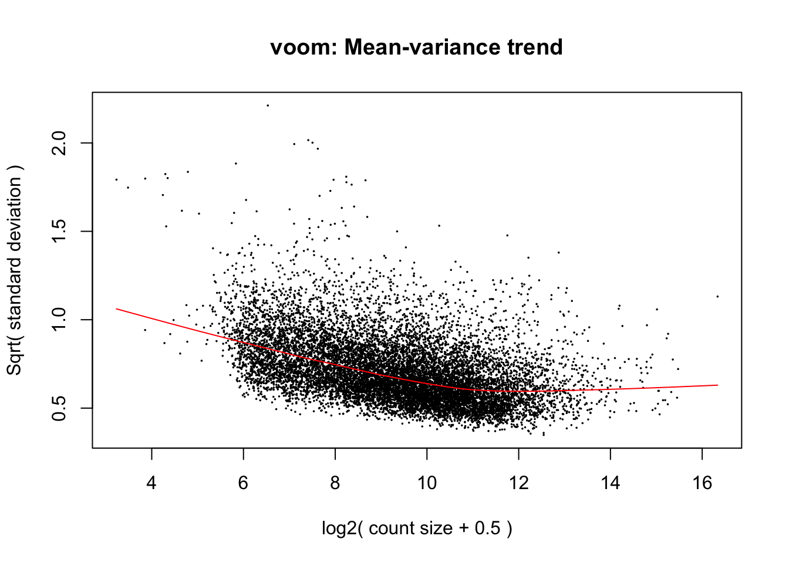
#corfit <- duplicateCorrelation(cpm.voom.cyclic, design, block=samples$Individual)
corfit$consensus <- 0.2631636
# Final voom on filtered data
cpm.voom.cyclic <- voom(dge_in_cutoff, design, normalize.method="cyclicloess", plot=TRUE, block=samples$Individual, correlation=corfit$consensus)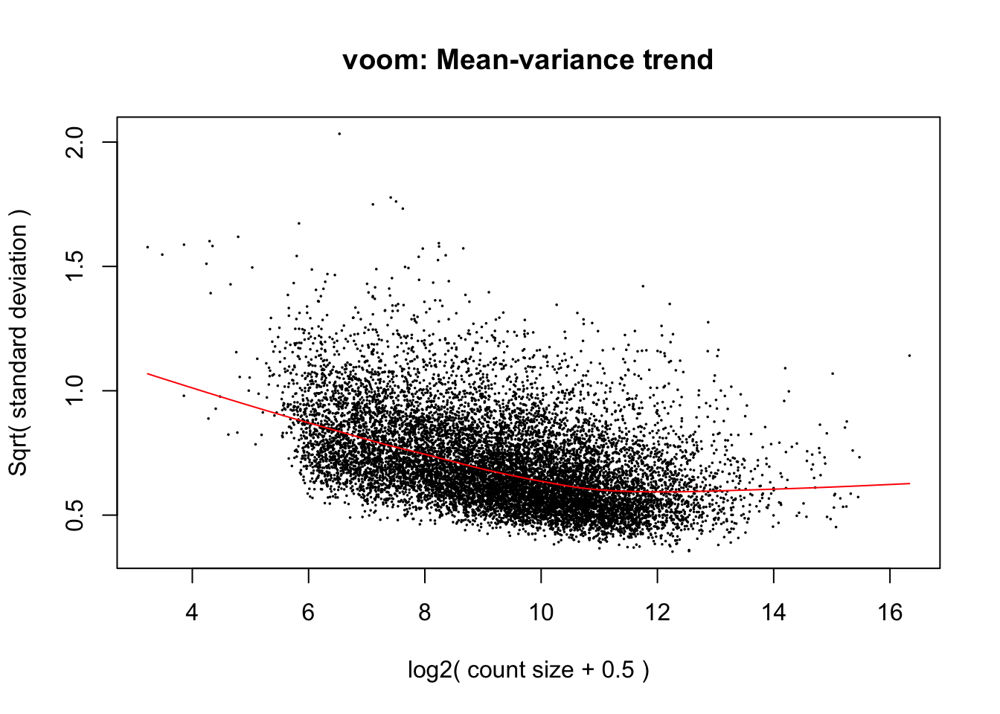
# Fit the linear model
fit.cyclic.norm <- lmFit(cpm.voom.cyclic, design, plot = TRUE, block=samples$Individual, correlation=corfit$consensus)
fit.cyclic.norm <- eBayes(fit.cyclic.norm)
# Fit model
cm3 <- makeContrasts(GAvR_Liver = Rhesus + Rhesus.Liver,
GAvR_Lung = Rhesus + Rhesus.Lung,
GAvR_Heart = Rhesus,
GAvR_Kidney = Rhesus + Rhesus.Kidney,
Sig_RLiver = Rhesus.Liver,
Sig_RLung = Rhesus.Lung,
Sig_RKidney = Rhesus.Kidney,
levels = design)
contrasts_GA <- contrasts.fit(fit.cyclic.norm, cm3)
fit2 <- eBayes(contrasts_GA)
top3 <- list(GA_Liver = topTable(fit2, coef=1, adjust="BH", number=Inf, sort.by="none"),
GA_Lung = topTable(fit2, coef=2, adjust="BH", number=Inf, sort.by="none"),
GA_Heart = topTable(fit2, coef=3, adjust="BH", number=Inf, sort.by="none"),
GA_Kidney = topTable(fit2, coef=4, adjust="BH", number=Inf, sort.by="none"),
Sign_RLiver = topTable(fit2, coef=5, adjust="BH", number=Inf, sort.by="none"),
Sign_RLung = topTable(fit2, coef=6, adjust="BH", number=Inf, sort.by="none"),
Sign_RKidney =topTable(fit2, coef=7, adjust="BH", number=Inf, sort.by="none"))
# Set FDR Level
FDR_level <- 0.0001
## DE between GA and Rhesus
mylist <- list()
mylist[["Liver"]] <- row.names(top3[[names(top3)[1]]])[top3[[names(top3)[1]]]$adj.P.Val < FDR_level]
mylist[["Lung"]] <- row.names(top3[[names(top3)[2]]])[top3[[names(top3)[2]]]$adj.P.Val < FDR_level]
mylist[["Heart"]] <- row.names(top3[[names(top3)[3]]])[top3[[names(top3)[3]]]$adj.P.Val < FDR_level]
mylist[["Kidney"]] <- row.names(top3[[names(top3)[4]]])[top3[[names(top3)[4]]]$adj.P.Val < FDR_level]
# Make
dev.off()null device
1 Four_comp <- venn.diagram(mylist, filename= NULL, main="DE genes between Great Apes and Rhesus (0.01% FDR)", cex=1.5 , fill = pal[1:4], lty=1, height=2000, width=3000)
grid.draw(Four_comp)
## Sign interaction
mylist <- list()
mylist[["Rhesus by Liver"]] <- row.names(top3[[names(top3)[5]]])[top3[[names(top3)[5]]]$adj.P.Val < FDR_level]
mylist[["Rhesus by Lung"]] <- row.names(top3[[names(top3)[6]]])[top3[[names(top3)[6]]]$adj.P.Val < FDR_level]
mylist[["Rhesus by Kidney"]] <- row.names(top3[[names(top3)[7]]])[top3[[names(top3)[7]]]$adj.P.Val < FDR_level]
# Make
dev.off()null device
1 Four_comp <- venn.diagram(mylist, filename= NULL, main="Significant interaction in rhesus (0.01% FDR)", cex=1.5 , fill = pal[1:3], lty=1, height=2000, width=3000)
grid.draw(Four_comp)
# Set FDR Level
FDR_level <- 0.001
## DE between GA and Rhesus
mylist <- list()
mylist[["Liver"]] <- row.names(top3[[names(top3)[1]]])[top3[[names(top3)[1]]]$adj.P.Val < FDR_level]
mylist[["Lung"]] <- row.names(top3[[names(top3)[2]]])[top3[[names(top3)[2]]]$adj.P.Val < FDR_level]
mylist[["Heart"]] <- row.names(top3[[names(top3)[3]]])[top3[[names(top3)[3]]]$adj.P.Val < FDR_level]
mylist[["Kidney"]] <- row.names(top3[[names(top3)[4]]])[top3[[names(top3)[4]]]$adj.P.Val < FDR_level]
# Make
dev.off()null device
1 Four_comp <- venn.diagram(mylist, filename= NULL, main="DE genes between Great Apes and Rhesus (0.1% FDR)", cex=1.5 , fill = pal[1:4], lty=1, height=2000, width=3000)
grid.draw(Four_comp)
# Set FDR Level
FDR_level <- 0.01
## DE between GA and Rhesus
mylist <- list()
mylist[["Liver"]] <- row.names(top3[[names(top3)[1]]])[top3[[names(top3)[1]]]$adj.P.Val < FDR_level]
mylist[["Lung"]] <- row.names(top3[[names(top3)[2]]])[top3[[names(top3)[2]]]$adj.P.Val < FDR_level]
mylist[["Heart"]] <- row.names(top3[[names(top3)[3]]])[top3[[names(top3)[3]]]$adj.P.Val < FDR_level]
mylist[["Kidney"]] <- row.names(top3[[names(top3)[4]]])[top3[[names(top3)[4]]]$adj.P.Val < FDR_level]
# Make
dev.off()null device
1 Four_comp <- venn.diagram(mylist, filename= NULL, main="DE genes between Great Apes and Rhesus (1% FDR)", cex=1.5 , fill = pal[1:4], lty=1, height=2000, width=3000)
grid.draw(Four_comp)## Make the contrast matrix
species <- samples$Species
# Replace Chimp and Rhesus with "CR"
chimp_GA <- gsub("Chimp", "CR", species)
new_clade <- gsub("Rhesus", "CR", chimp_GA)
tissue <- samples$Tissue
# Rename columns of the contrast matrix
design <- model.matrix(~ new_clade*tissue)
colnames(design)[1] <- "Intercept"
colnames(design) <- gsub("new_cladeHuman", "Human", colnames(design))
colnames(design) <- gsub("tissuekidney", "Kidney", colnames(design))
colnames(design) <- gsub("tissueliver", "Liver", colnames(design))
colnames(design) <- gsub("tissuelung", "Lung", colnames(design))
colnames(design) <- gsub(":", ".", colnames(design))
# Voom with individual as a random variable
cpm.voom.cyclic <- voom(dge_in_cutoff, design, normalize.method="cyclicloess", plot=T)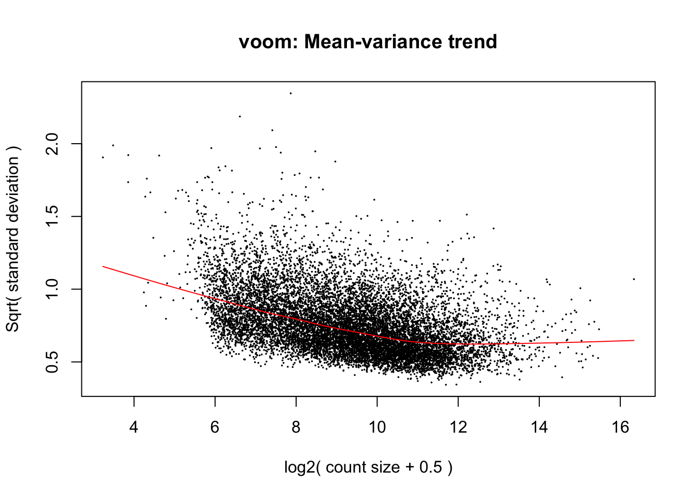
# corfit <- duplicateCorrelation(cpm.voom.cyclic, design, block=samples$Individual)
corfit$consensus <- 0.3073617
# Final voom on filtered data
cpm.voom.cyclic <- voom(dge_in_cutoff, design, normalize.method="cyclicloess", plot=TRUE, block=samples$Individual, correlation=corfit$consensus)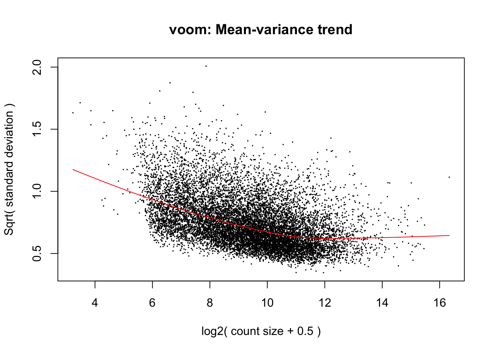
# Fit the linear model
fit.cyclic.norm <- lmFit(cpm.voom.cyclic, design, plot = TRUE, block=samples$Individual, correlation=corfit$consensus)
fit.cyclic.norm <- eBayes(fit.cyclic.norm)
# Fit model
cm4 <- makeContrasts(HvCR_Liver = Human + Human.Liver,
HvCR_Lung = Human + Human.Lung,
HvCR_Heart = Human,
HvCR_Kidney = Human + Human.Kidney,
Sig_HLiver = Human.Liver,
Sig_HLung = Human.Lung,
Sig_HKidney = Human.Kidney,
levels = design)
contrasts_CR <- contrasts.fit(fit.cyclic.norm, cm4)
fit2 <- eBayes(contrasts_CR)
top3 <- list(CR_Liver = topTable(fit2, coef=1, adjust="BH", number=Inf, sort.by="none"),
CR_Lung = topTable(fit2, coef=2, adjust="BH", number=Inf, sort.by="none"),
CR_Heart = topTable(fit2, coef=3, adjust="BH", number=Inf, sort.by="none"),
CR_Kidney = topTable(fit2, coef=4, adjust="BH", number=Inf, sort.by="none"),
Sign_HLiver = topTable(fit2, coef=5, adjust="BH", number=Inf, sort.by="none"),
Sign_HLung = topTable(fit2, coef=6, adjust="BH", number=Inf, sort.by="none"),
Sign_HKidney =topTable(fit2, coef=7, adjust="BH", number=Inf, sort.by="none"))
# Set FDR Level
FDR_level <- 0.0001
## DE between Human and Chimp/Rhesus
mylist <- list()
mylist[["Liver"]] <- row.names(top3[[names(top3)[1]]])[top3[[names(top3)[1]]]$adj.P.Val < FDR_level]
mylist[["Lung"]] <- row.names(top3[[names(top3)[2]]])[top3[[names(top3)[2]]]$adj.P.Val < FDR_level]
mylist[["Heart"]] <- row.names(top3[[names(top3)[3]]])[top3[[names(top3)[3]]]$adj.P.Val < FDR_level]
mylist[["Kidney"]] <- row.names(top3[[names(top3)[4]]])[top3[[names(top3)[4]]]$adj.P.Val < FDR_level]
# Make
dev.off()null device
1 Four_comp <- venn.diagram(mylist, filename= NULL, main="DE genes between Human and Chimp/Rhesus (0.01% FDR)", cex=1.5 , fill = pal[1:4], lty=1, height=2000, width=3000)
grid.draw(Four_comp)
## Sign interaction
mylist <- list()
mylist[["Human by Liver"]] <- row.names(top3[[names(top3)[5]]])[top3[[names(top3)[5]]]$adj.P.Val < FDR_level]
mylist[["Human by Lung"]] <- row.names(top3[[names(top3)[6]]])[top3[[names(top3)[6]]]$adj.P.Val < FDR_level]
mylist[["Human by Kidney"]] <- row.names(top3[[names(top3)[7]]])[top3[[names(top3)[7]]]$adj.P.Val < FDR_level]
# Make
dev.off()null device
1 Four_comp <- venn.diagram(mylist, filename= NULL, main="Significant interaction in humans (0.01% FDR)", cex=1.5 , fill = pal[1:3], lty=1, height=2000, width=3000)
grid.draw(Four_comp)
# Set FDR Level
FDR_level <- 0.001
## DE between GA and Rhesus
mylist <- list()
mylist[["Liver"]] <- row.names(top3[[names(top3)[1]]])[top3[[names(top3)[1]]]$adj.P.Val < FDR_level]
mylist[["Lung"]] <- row.names(top3[[names(top3)[2]]])[top3[[names(top3)[2]]]$adj.P.Val < FDR_level]
mylist[["Heart"]] <- row.names(top3[[names(top3)[3]]])[top3[[names(top3)[3]]]$adj.P.Val < FDR_level]
mylist[["Kidney"]] <- row.names(top3[[names(top3)[4]]])[top3[[names(top3)[4]]]$adj.P.Val < FDR_level]
# Make
dev.off()null device
1 Four_comp <- venn.diagram(mylist, filename= NULL, main="DE genes between Great Apes and Rhesus (0.1% FDR)", cex=1.5 , fill = pal[1:4], lty=1, height=2000, width=3000)
grid.draw(Four_comp)
# Set FDR Level
FDR_level <- 0.01
## DE between GA and Rhesus
mylist <- list()
mylist[["Liver"]] <- row.names(top3[[names(top3)[1]]])[top3[[names(top3)[1]]]$adj.P.Val < FDR_level]
mylist[["Lung"]] <- row.names(top3[[names(top3)[2]]])[top3[[names(top3)[2]]]$adj.P.Val < FDR_level]
mylist[["Heart"]] <- row.names(top3[[names(top3)[3]]])[top3[[names(top3)[3]]]$adj.P.Val < FDR_level]
mylist[["Kidney"]] <- row.names(top3[[names(top3)[4]]])[top3[[names(top3)[4]]]$adj.P.Val < FDR_level]
# Make
dev.off()null device
1 Four_comp <- venn.diagram(mylist, filename= NULL, main="DE genes between Humans versus Chimps/Rhesus (1% FDR)", cex=1.5 , fill = pal[1:4], lty=1, height=2000, width=3000)
grid.draw(Four_comp)